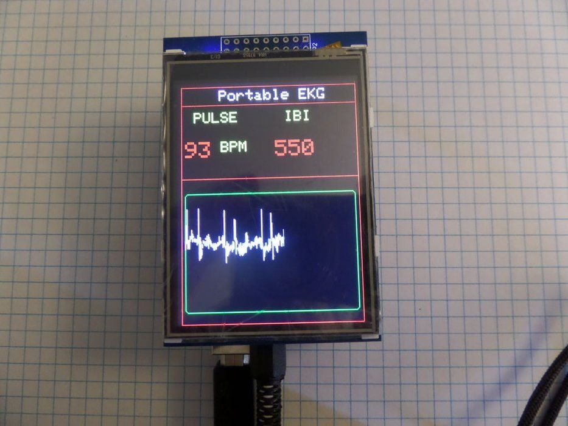
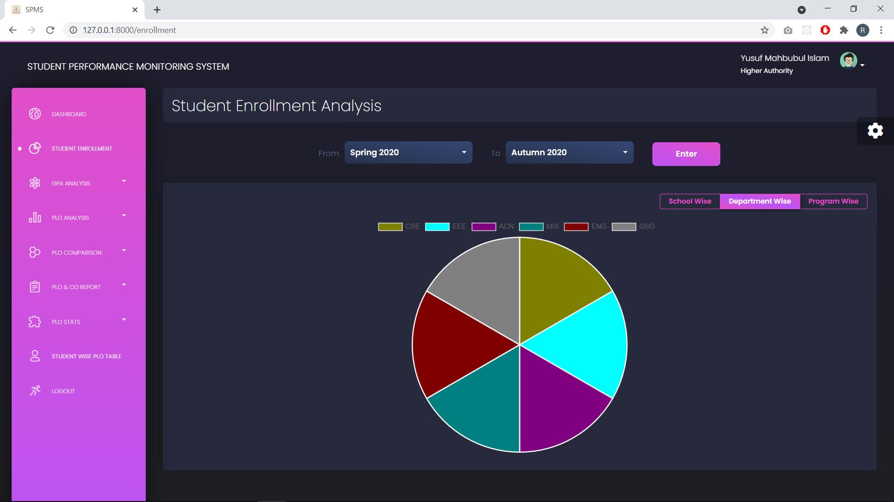
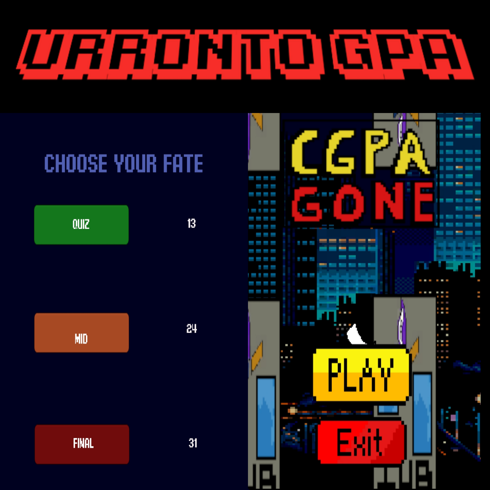
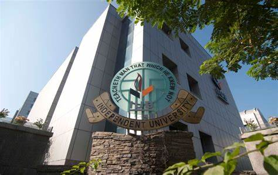

Intro

From a very young age, I have always been passionate about both business and technology. I was always driven by curiosity to learn new things and gather deeper knowledge about the vastly growing world of Tech and how it is impacting the modern world we live in today. Here are some of my awesome work.
I aim to pursue a career in Data Science and eventually combine my knowledge of technology and my love for business to create my own software and games. Experimenting with new ideas and making things by myself has always been fun for me, and I plan on founding my own company by the time I hit 40! I believe having set goals and checkmarks for the future is a very important aspect to plan your own future, and I try my best to further increase my skill set gradually to meet my set goals. Everybody has dreams, I plan to make mine a reality.
Work
Built a portable ECG machine prototype for measuring Heart BPM using Arduino

(Group Project) Database for a student monitoring system using Django, Python, HTML, and PHP

Built my own game using Unity Engine and C# script

About

I completed my High School from Maple Leaf International School, receiving the Daily Star Award during my O levels and a medal for Outstanding Academic Performance.
Currently, I am studying BSc. in Computer Science and Engineering from Independent University Bangladesh. I was announced in the Dean's List of 2021 from my University for achieving a CGPA of 3.51 for 3 consecutive Semesters.
My Extra-Curricular Activities include the following:
- Computer Trainer at InclusionX (2017-2018)
- Head of Documentation at MLIS MUN Club (2017-2019)
- Volunteer at Jaago Foundation
- Volunteer at Durnibar Foundation
- PR Executive at Smile Inventors (NGO)
- Second Runner up at the MLIS Intra School photography competition
- Event organizer at IUB Ascension
Contact